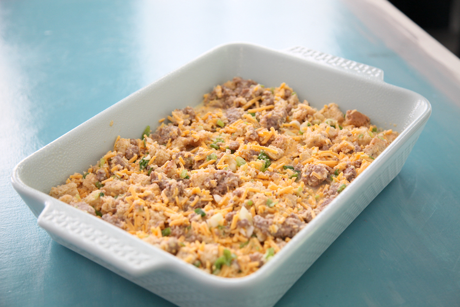
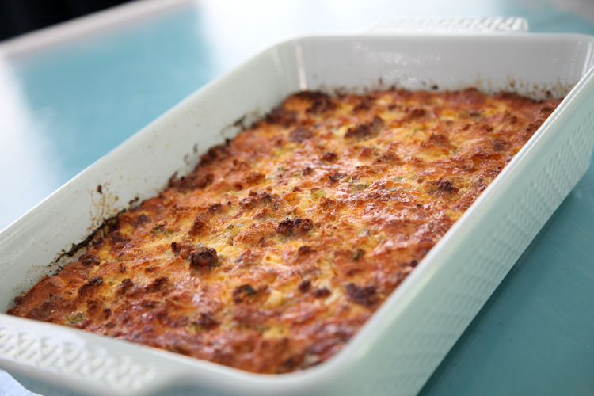

This Make Ahead Sausage and Egg Casserole is super satisfying, simple to make and filling too. Even better, it is the “throw it all in a bowl and mix it” kind of casserole and it can be made a day ahead. An hour before you want to eat, just pop it in the oven and it comes out perfectly browned and delicious. This is one of my favorites for breakfast when we have company over. It makes breakfast on Thanksgiving Day a snap because there’s so much other prep to do.
I usually use the original Jimmy Dean sausage for this recipe. However, you can sub a spicy sausage, bacon, diced ham or use a vegetarian crumble. There’s no right or wrong here. Just be sure to pre-cook any meat that you will be adding.
This is another place where there’s no right or wrong. I like the combination of sharp cheddar with the dry mustard, sausage and egg. By all means, you can use any other type of cheese that you’d like. Gruyere with diced ham would be fantastic, bacon with mozzarella would be good too.
I use Canyon Bakehouse Heritage Style gluten free sandwich bread because it comes in a full-sized loaf and the bread tastes great! You can use a regular wheat bread if you don’t need to eat gluten free, or any other bread that you enjoy. Once cut up, the 6 slices of bread will amount to roughly 4 cups of bread cubes.
Beat up the eggs with the milk or dairy free substitute, then add in the remaining ingredients. If you are baking in a ceramic or glass dish, keep the mixture in the mixing bowl covered in the fridge overnight. Pour it into the baking dish in the morning when you are ready to bake it. If you put a cold glass or ceramic dish in a hot oven, it might crack. We don’t want that!
Grease a large casserole dish or 9×13 pan. I like to use a metal pan so that it can go directly from the fridge to the oven. That kind of sudden temp change can cause a glass or ceramic dish to crack. So let it warm up a bit at room temp before putting a glass or ceramic dish in the oven.
Cook sausage in frying pan over medium high heat until no pink remains. Break it apart as it cooks into crumbles or small chunks. Drain and let cool slightly before moving on to the next step.
Combine all ingredients in a large bowl. Pour into your greased dish. Cover and store in the fridge overnight. Or- if using a glass/ceramic dish, store mixture in the bowl and wait to pour it into your baking dish until you are ready to bake.
Preheat your oven to 350 degrees. Bake for 45-60 minutes, until the center no longer jiggles and it is browned nicely. Remove from the oven and enjoy right away!
